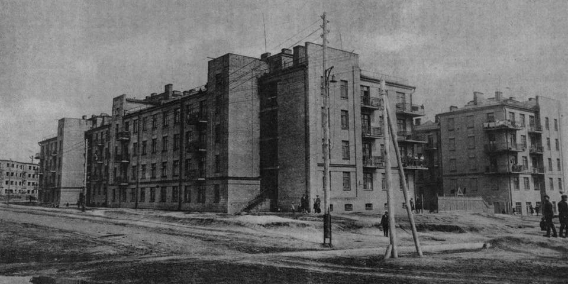
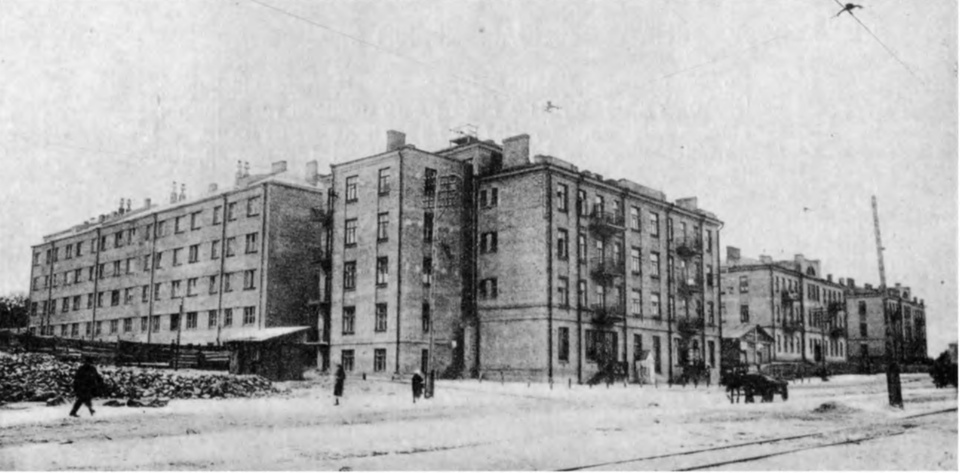
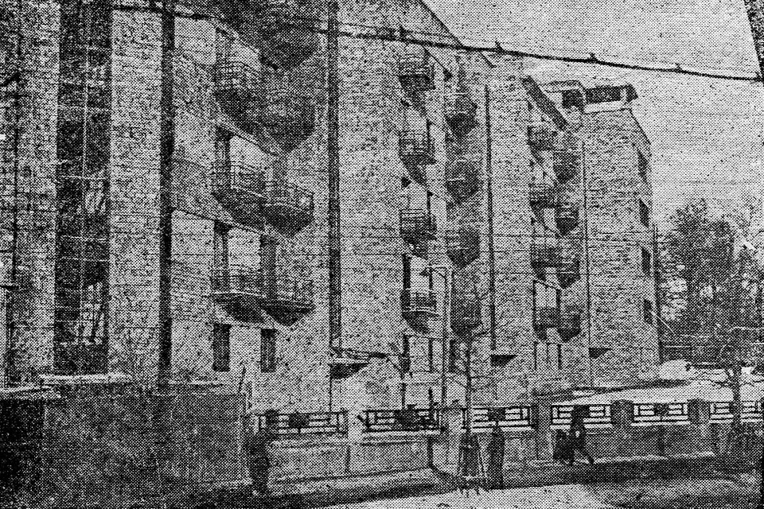
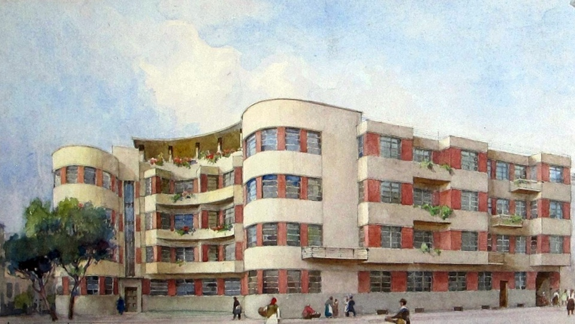
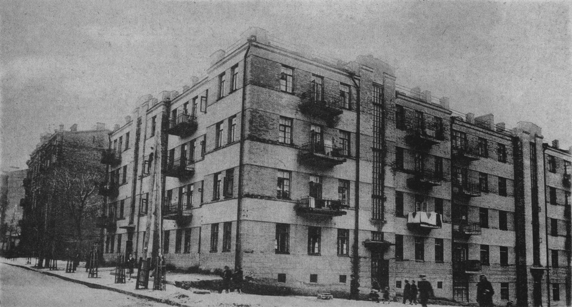
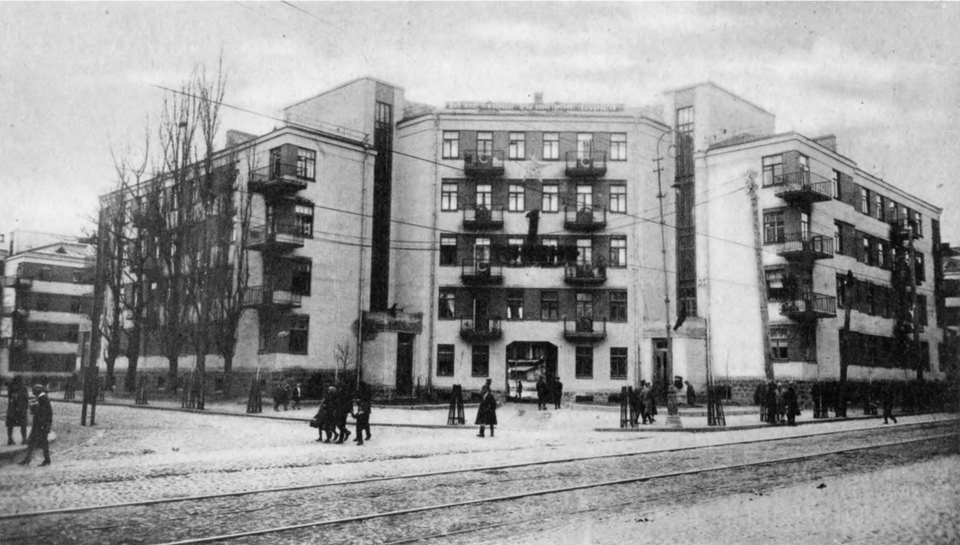
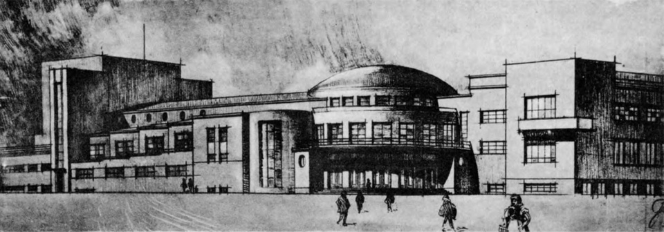
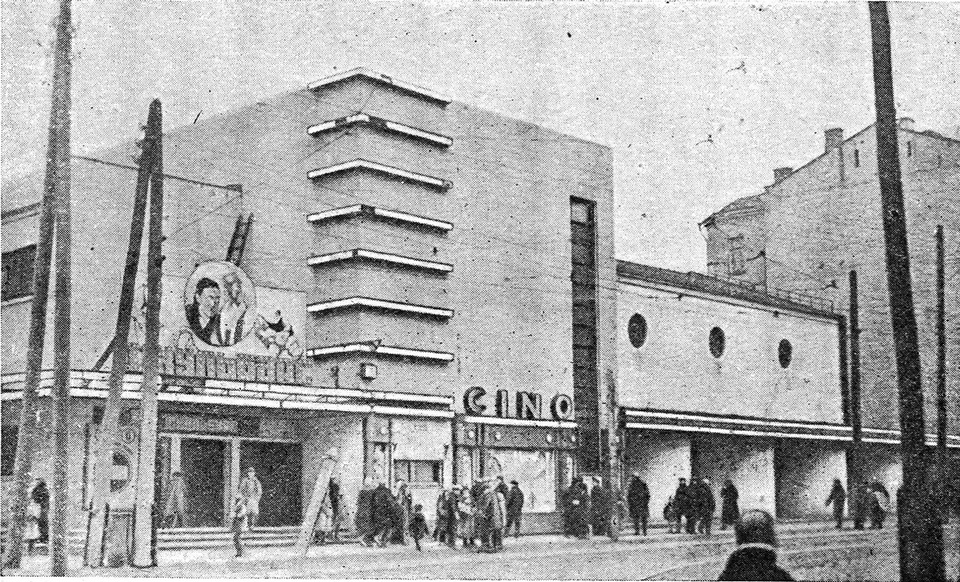

Как узнать конструктивистское здание
Конструктивизм, присутствовавший в архитектуре в 1920-х — начале 1930-х годов, заметно отличается от предыдущих стилей полным пренебрежением к художественной выразительности. В попытке утвердить торжество функциональности над декором здание собиралось из функциональных элементов, из-за чего в прессе 1930-х стиль получил клеймо «архитектура коробок». У стиля есть ряд внешних особенностей, которые позволят понять, что перед вами – конструктивистское здание.
Строчная застройка и ориентация по сторонам света
Конструктивистская архитектура стремится быть гуманной. Чтобы соблюдались нормы освещенности (инсоляции), окна жилых домов ни в коем случае не должны выходить на север. Конструктивизм предлагает размещать здания под углом к меридиану, оптимальным не только для инсоляции, но и вентиляции — этот параметр зависит от местной розы ветров и градуса широты. Например, для поселка Харьковского тракторного завода, по расчетам, оптимальным был угол в 26 градусов к меридиану — он и лег в основу ориентации сетки улиц поселка.
В Киеве конструктивистские жилые комбинаты не были настолько крупными, чтобы определять ориентацию улиц. Более того, они часто строились в местности с уже сложившейся сеткой. Поэтому в Киеве нет единого угла наклона конструктивистских домов, но при этом правило размещения окон по солнечным сторонам везде выполняется.
Жилые дома в Артиллерийском переулке стоят под углом 21 градус к меридиану. Такой же угол имеет жилой комбинат Киевского паровозоремонтного завода на Чоколовке (Вузовская, 4). Дома металлистов на Лукьяновке (улица Довнар-Запольского) имеют угол от 5 до 35 градусов. Кооператив «Жовтнивка» на улице Винниченко, состоящий из пяти домов, расположен под углом в 14 градусов. Дома кожевников на Куренёвке (Кирилловская, 109) также расположены под углом 45 градусов к меридиану, но в данном случае это обусловлено ориентацией улицы Кирилловской.
Конструктивизм требует непреклонности в вопросах инсоляции — ориентировать дом нужно вне зависимости от ориентации улицы. В Киеве есть один такой пример — дом Наркомюста (Дом юристов), спроектированный архитектором Царёвым (улица Сечевых Стрельцов, бывшая Артёма, 48), который игнорирует линию застройки улицы.
Плоские крыши
Идея использовать пространство крыш принадлежит пионеру функциональной архитектуры Ле Корбюзье. На крышах размещали шезлонги для загара, прогулочные террасы или сады. В Киеве есть две плоские крыши времен конструктивизма — ТЮЗ и Дом врача. В Доме врача (1928–1930) известный киевский архитектор Павел Алёшин пытался устроить зону для прогулок на крыше, но не хватило финансирования.
Идей использования плоских крыш было множество, но они редко находили воплощение из-за проблем с гидроизоляционными материалами: плоские крыши протекали. Надежную гидроизоляцию не могли обеспечить и в конце 1940-х, когда такая возможность упоминалась при обсуждении проектов Крещатика. В советскую архитектуру они вернулись только в 1960-х.
Горизонтальность
Конструктивистские здания никогда не устремлены ввысь — они вытянуты горизонтально. Идеальный случай предполагает ленточные окна на всю ширину здания для максимальной инсоляции. В Киеве ленточных окон нет, но горизонтальность подчеркивается цветными полосами, для создания которых использовали кирпич разных оттенков или краску. В некоторых домах это цветовое решение сохранилось: Дом Наркомюста, Дом врача, постконструктивистский Дом специалистов (Проспект победы, 30).
Конструктивистские здания обычно не выше трех-пяти этажей. Лифты в них изначально не предусмотрены, но в некоторых домах, к которым позже достраивали верхние этажи, при этом были установлены лифты (например, в доме на Лютеранской, 26). Наличие башен могло быть оправдано только функциональной потребностью: это каланчи пожарных частей и башни с часами. Например, в Киеве сохранилась пожарная часть завода «Большевик» на проспекте Победы — такая же, как демонтированная в 1980-х башня на улице Рыбальской. Башню с часами можно увидеть в проекте киевского вокзала архитектора Щусева.
Сплошное вертикальное остекление лестничных пролетов
В конструктивизме лестница обозначена во внешней архитектуре здания: часто она видна снаружи через сплошное вертикальное остекление. Противоположная крайность — лестница может быть подчеркнута множеством узких горизонтальных окон, лентой идущих вдоль здания.
Сплошное остекление пролетов пережило конструктивизм, использовалось в постконструктивизме и в сталинском классицизме. В Киеве оно встречается в большинстве конструктивистских домов: доме кооператива «Арсеналец» (Грушевского, 28/2), в постконструктивистском здании кооператива «Ленинка» (Институтская, 22/7), кинотеатре «Жовтень» на Константиновской, Доме юристов и многих других.
Круги и прямоугольники
В архитектуре конструктивизма отсутствуют сложные криволинейные формы. Есть только две линии — прямая и окружность. Торцы зданий могут быть скругленными. Окна могут быть круглыми или прямоугольными, но никак не арочными. Арочные окна конструктивистами рассматриваются как элемент церковной архитектуры, архаичной и недопустимой. Здания редко представляют собой строгий параллелепипед: чаще всего можно видеть игру формами, когда здание напоминает несколько коробок, приставленных друг к другу.
Яркие примеры конструктивистской геометрии — ТЮЗ на Липской, ДК «Пищевик» на Контрактовой площади (сейчас — музыкальный театр) и ДК «Металлист» на проспекте Победы (сейчас — ДК завода «Большевик»).
Отказ от излишеств
Духу конструктивизма чужд художественный образ. Эстетика здания в том, что его форма обоснована функцией. Конструктивизм обычно не стремится к принятой в классике симметрии, в Киеве асимметричные решения фасада встречаются в основном в общественных зданиях: кинотеатр «Жовтень», ДК «Большевик», ДК «Пищевик».
Конструктивизм отрицает восприятие дома как застывшей массы, в которой верхние части легче нижних. Лишенные цоколя конструктивистские здания вырастают прямо из земли. Верхняя граница также не обозначена: карнизов нет. У большинства зданий нет подчеркнутого начала или конца.
Отсутствие декора позволяет отличить конструктивизм от постконструктивизма, который сочетает конструктивистские формы с классическими декоративными элементами (скульптурами, колоннами, карнизами, фризами) и может использовать симметрию. Чтобы не спутать конструктивизм с постконструктивизмом, нужно помнить о ключевом принципе конструктивизма: ничего лишнего.